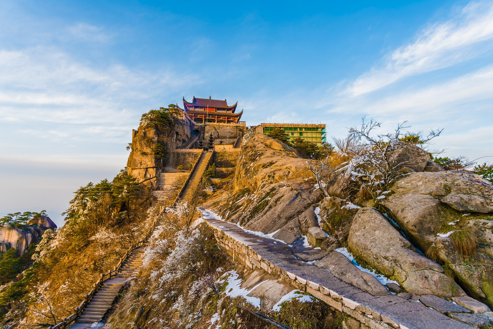
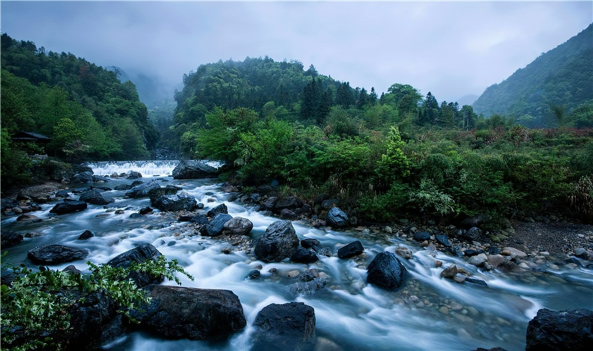
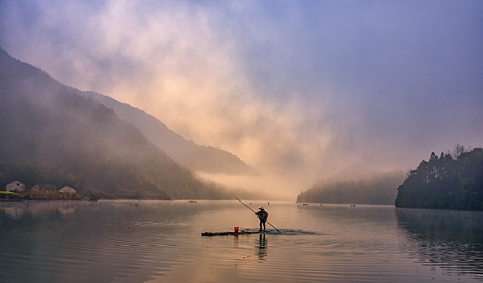
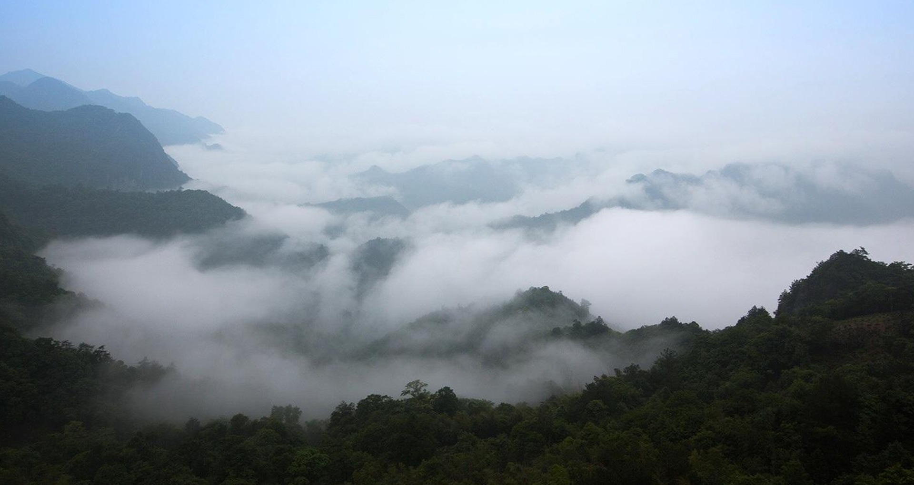

天台寺
横卧于天台、玉屏峰间的凹地上，坐北朝南，块石木结构，硬山顶，是一座3层走马通楼的民居式殿宇。是1983年国务院确定的汉地佛教全国重点寺院之一。

牯牛降
坐落在石台、祁门两县交界处，以雄、奇、险著称，是黄山山脉向西延伸的主体，古称“西黄山”，山岳风光秀美绮丽，是池州著名景点之一。境内青山绿水相依，烟云变化无常，于险峻中见温柔，秀美中见恬静，奇幻中见优雅，生态环境极为优美，自然风光集雄、奇、幽、秀于一身。此外，据MaiGoo小编了解，山内也是人杰地灵，有着浓厚的文化底蕴和光荣的革命传统，包括明末复社领袖、文学家、爱国诗人吴应箕的遗迹、古雪山民钓石，以及折射着中国大半个世纪历史风云的标语墙等。

秋浦河
旅游景区，是池州市第一个以户外拓展为主的景区，包括了秋浦河漂流、秋浦渔村和百丈崖三个景点，是池州有名景点。“诗仙”李白曾五次游历的秋浦河，因李白“五游秋浦”作诗17首，被称为“诗之河”。如今，景区内共开发有十大景区，开放旅游子项目有188项，各具特色。其中，秋浦河漂流全长4公里，途经14个险滩，礁石林立、形态各异，乘坐皮筏可领略沿岸美景，享受激情冲浪。除了户外拓展外，还有女儿村文化体验馆、秋浦奇石馆、李白诗歌长廊等文化类游玩项目。

仙寓山
位于东至、石台、祁门三县交界处，寓意“神仙寓所”所在的山，是皖南第四高峰，为黄山的西脉。石台县仙寓山景区，是池州著名景点之一。这里有气势磅礴的仙寓峡谷，有黄金崖、老虎崖等怪石嶙峋的高山悬崖，还有红军洞、别一洞等曲径通幽、变幻无穷的天然溶洞，有仰天堂、大屏湾等藤萝缠绕、古木参天的原始森林。境内有誉为“中国富硒第一村”的大山富硒村，以高含硒量闻名全国；有形成于三亿四千万年前的“七彩玉谷”，石质为火山爆发后形成的彩色花岗石；还有保存完好的榉根关古徽道。